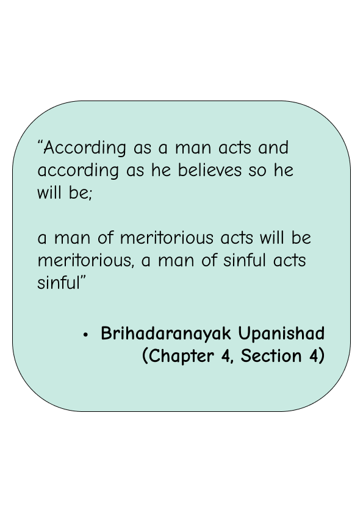
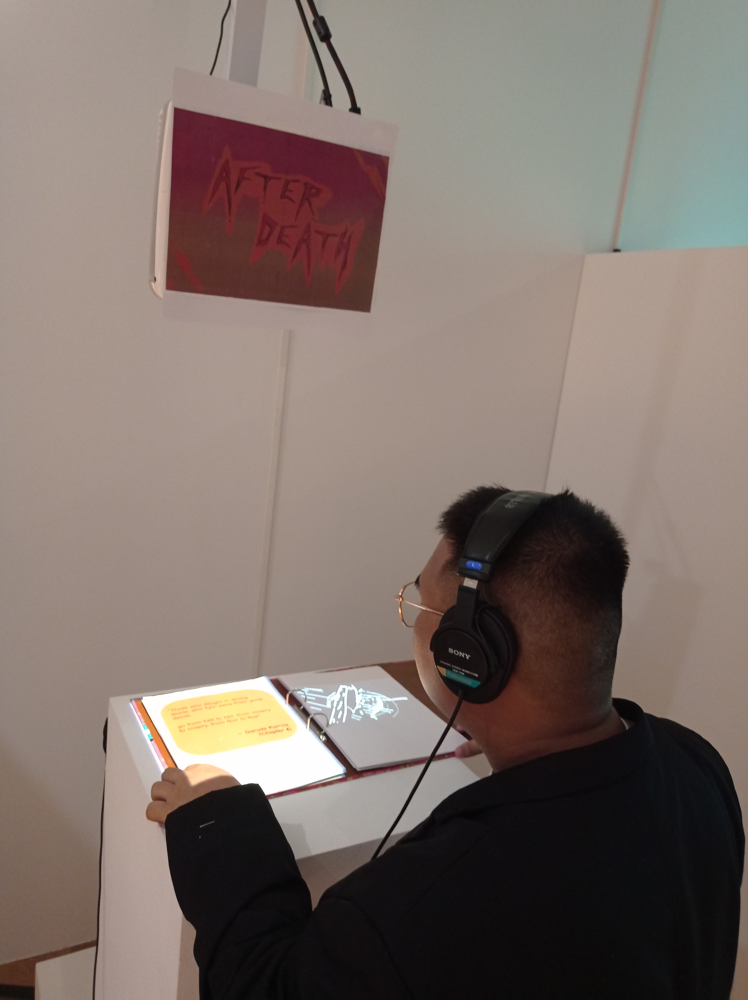

Background
As the world has been engulfed by westernization and new media, I felt disconnected from my culture and the intriguing concepts it embraces. So, the idea of this project came to mind thinking that I’d be able to go back, look at what I was taught in my childhood and be familiar with my Hindu roots again. Through a minute lens into the broad world of Hinduism, AfterDeath not only serves as a commentary into how a religion sees the afterlife, but also attempts to provoke thought on how other cultures may present similar ideals in their contexts and myths.


The Interactive Aspect
The interaction in "AfterDeath" is primarily manifested through the act of turning pages within the comic. Each turn of the page reveals static physical images on the left side and corresponding animations on the right side. These elements are intricately linked to the unfolding narrative of the comic. The animations are designed to be gradually unveiled as the reader progresses through the static images on the left, creating a sense of revelation that the concept of the afterlife holds. Furthermore, the repercussions of events depicted in the animations are unveiled as the reader transitions to subsequent pages, enhancing the thematic exploration of revelation within the comic. Embedded within the narrative is a compelling storyline centered around the consequences of killing a cow and the ensuing suffering in hell. To enhance the immersive experience, the comic provides headphones for readers to wear, as the animations are accompanied by sound, further immersing them in the narrative's auditory dimension.
